3X-UI
3X-UI — это усовершенствованная веб-панель управления с открытым исходным кодом, предназначенная для управления сервером Xray-core. Она предлагает удобный интерфейс для настройки и мониторинга различных VPN- и прокси-протоколов.

Шаг 1
Подключитесь к серверу. Для этого можно использовать консоль либо программу Termius или Mobaxterm.
Шаг 2
Обновите пакеты введя команду:
apt update && sudo apt upgrade
Если хотите сразу пропустить Шаг 3:
apt update && sudo apt upgrade -y
Шаг 3
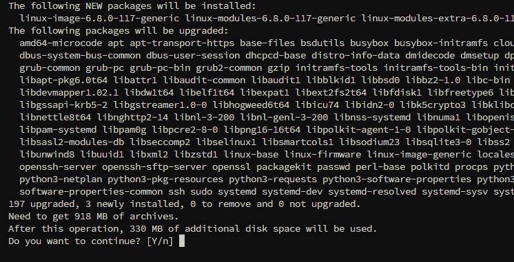
На вопрос Do you want to continue? пишем y
Шаг 4
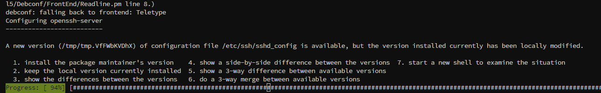
Выбираем вариант 2 keep the local version currently installed
Шаг 5
Устанавливаем саму панель 3x-UI:
bash <(curl -Ls https://raw.githubusercontent.com/mhsanaei/3x-ui/master/install.sh)
Шаг 6
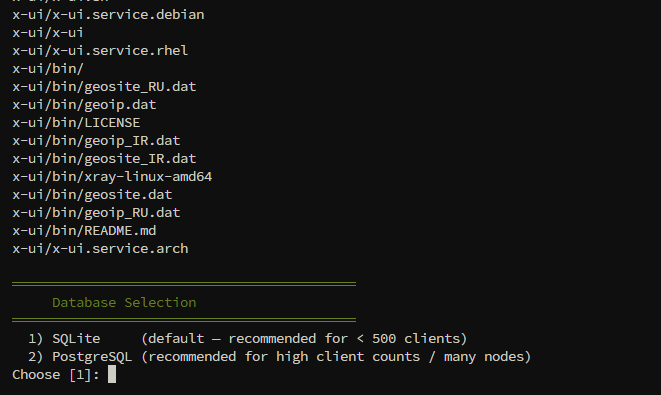
Выбирайте первую систему управления базой 1)SQLite
Шаг 7
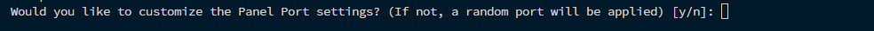
Если хотите указать свой порт - y, если хотите сгенерированный - n
Шаг 8

Если у вас есть свой домен то выбирайте 1, если нет то 2
Шаг 9
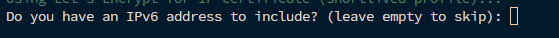
Если ваш сервер имеет IPv6, то вписывайте, если он отсутствует или не знаете, то пропустите.
Шаг 10
Можете указать свой порт или пропустите, оставив по умолчанию порт 80.
Шаг 11
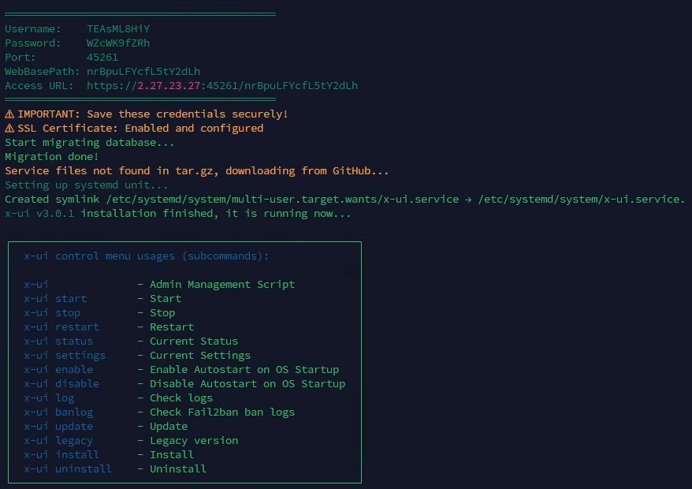
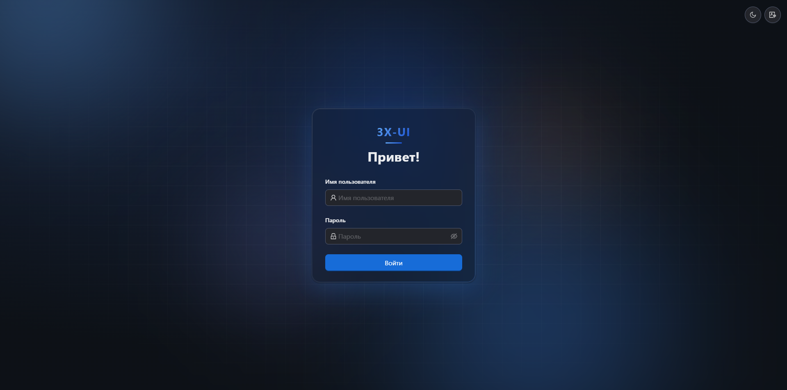
Сохраните полученные данные(URL, Username и Password) и войдите в панель.
Шаг 12
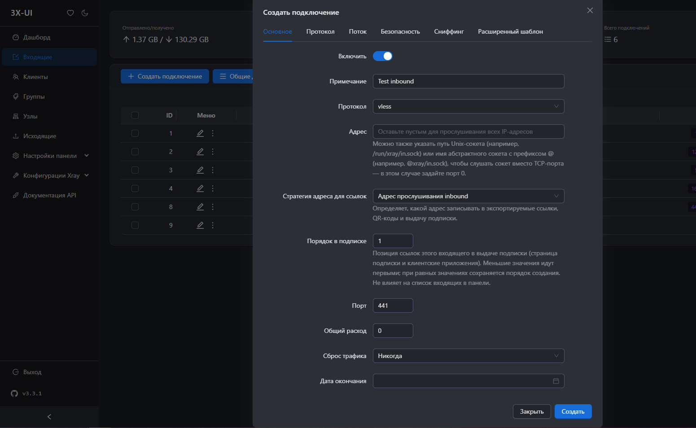
После входа в панель перейдите в пункт Входящие и Создайте подключение. Во вкладке Основные выставите любой порт, протокол и примечание.
Шаг 13
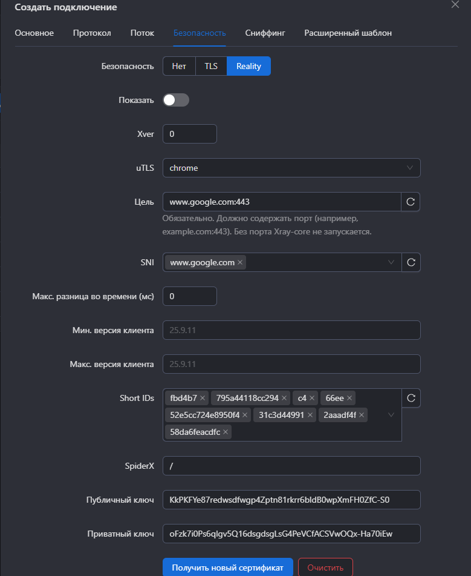
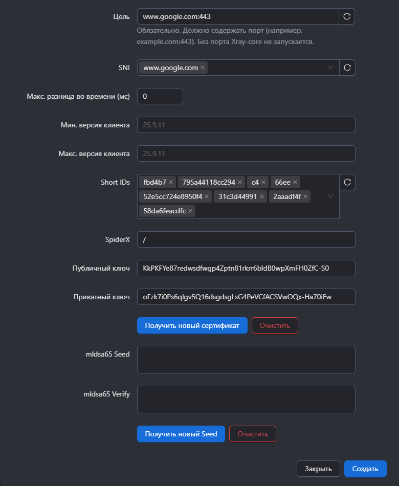
Перейдите во вкладку Безопасность, выберите Reality и пропишите SNI и Цель в виде доменов на незаблокированные ресуры. Нажмите Создать.
Шаг 14
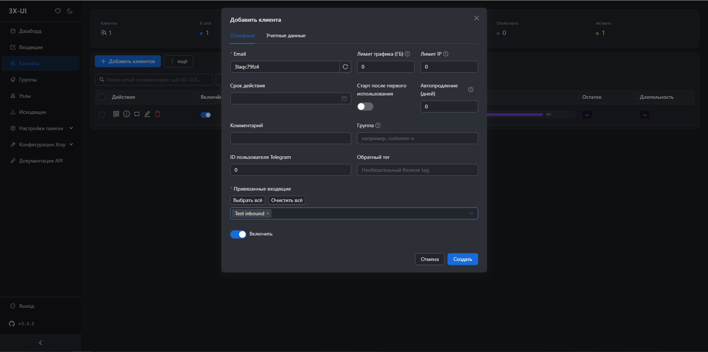
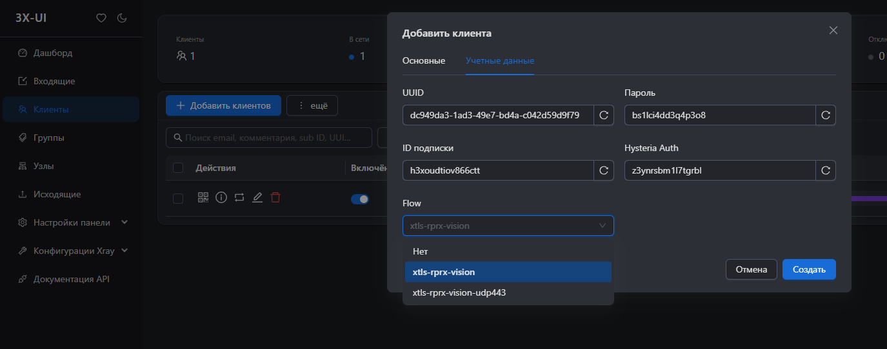
Перейдите в пункт Клиенты и нажмите Добавить клиентов. В самом низу где строка, из выпадающего списка выберите созданное подключение. Перейдите во вкладку Учетные данные, во Flow выберите xtls-rprx-vision и нажмите Создать.
Шаг 15
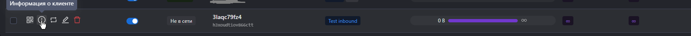
У созданного клиента нажмите Информация о клиенте.
Шаг 16
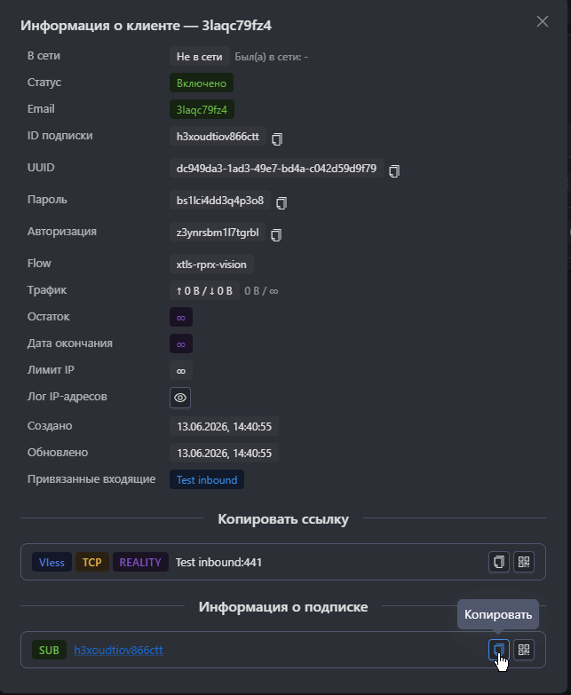
Скопируйте ссылку на подписку и вставьте её в удобную для вас программу или приложение для подключения.
Для получения большей информации ознакомьтесь с оффициальным wiki:
https://github.com/MHSanaei/3x-ui/wiki